EZChat
Product Design/ Independent Project
Project Brief
EZchat is a social media App that can make our life easier by several features.
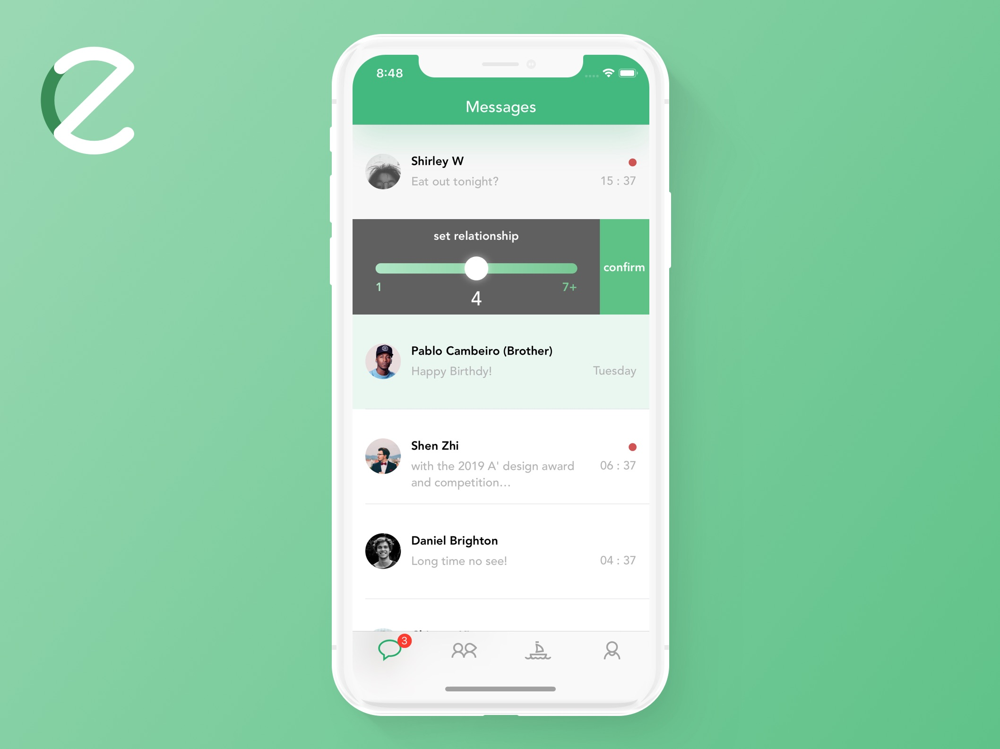Hypothesis: Social Media & Social Status
Social media not only facilitates the creation and sharing of information, but also puts pressure on us and creates a virtual social status for everyone, which is the major source of anxiety.
People using multiple (7 - 11) social media platforms are more likely to feel anxious and depressed, according to a research in 2017.
We are afraid of other's success and ourselves' being ignored - which could increase their and decrease our social status respectively.
Pursuing a higher social status is important and even becomes some people's goal - those with higher social status can always receive more "like"s, and be respected on the social media.
Strong Ties and Weak Ties
Social media brings us weak ties (Mark Granovetter, 1973) - those who are not familiar with us also can be our "friends" on social media.
According to strong and weak ties, social media platforms can be classified into two groups:
Some emphasize strong ties: Messenger, WeChat, WhatsApp, ... These Apps are more like chatting tools, using "Chats" as homepages.
The others emphasize weak ties, or try to make balance between strong and weak ties. These Apps tend to use "Posts" or "Stories" as homepages.
Competitive Analysis
How do these popular social media design their App and why?
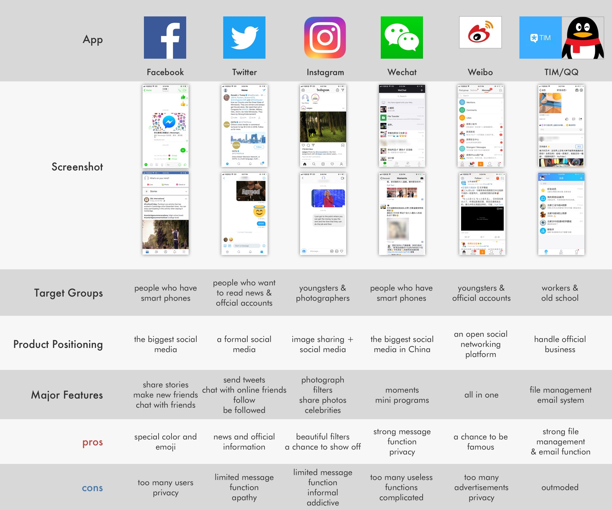Perceptual Mapping
What we need is an highly customized App that can make a good balance between private and public (i.e. strong and weak ties).

The lifecycle of Social Media
When a social media first appear, users flock to it and the amount of users can culminate for a long time. Eventually the figure will decline and reach a plateau, when another social media can start to thrive.
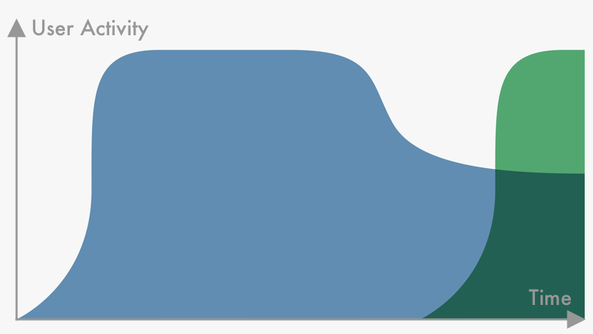User Research
Questionnaire
Questionnaires were sent online and 195 valid ones were collected.
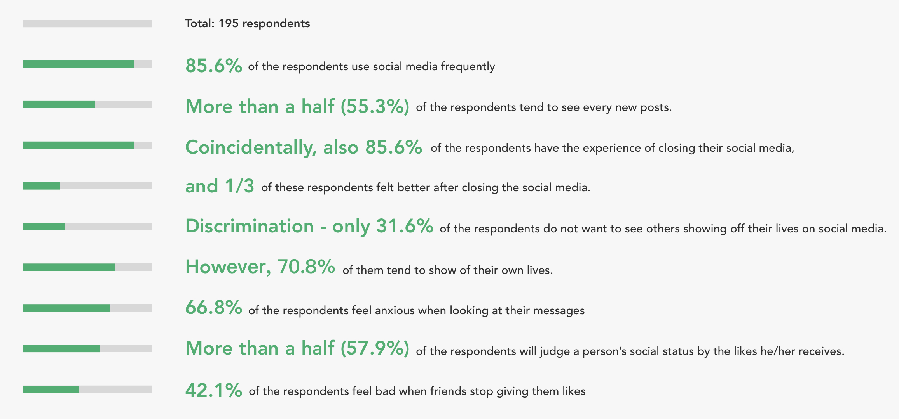Detailed User Interview
I found some interesting things during the detailed interview of five people.
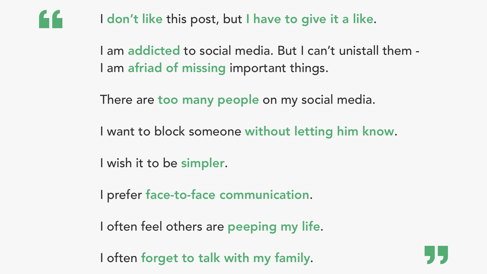Empathy Map: If I am the User...
I used Empathy Map to better understand users' pain points and needs.
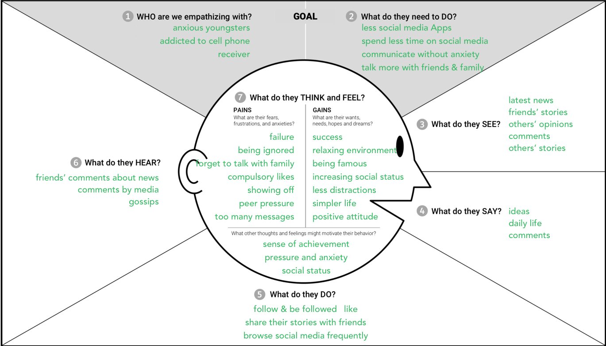Research Summary
In weak ties, anxiety and stress come from FOMO and cognitive dissonance, which is a major source. In strong ties, they're from the change of social status and spotlight effect. Anxiety and stress appear mostly on the "Chats" and "Posts" pages. Some users are already tired with numerous social media platforms.

App Design: EZchat, EZ Life.
Logo & Color
Based on previous research, EZchat will focus on strong ties, which means the homepage will be "Chats". The Logo is composed of "e" and "z". Green is chosen as the theme color to create an easy atmosphere.
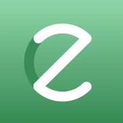Features
EZchat could make our life (a little bit) easier by these features - a little bit is enough.
Set Relationship
Always forget to talk to your family? Just set a higher relationship and system will highlight them automatically by light green color, according to the time and relationship level.
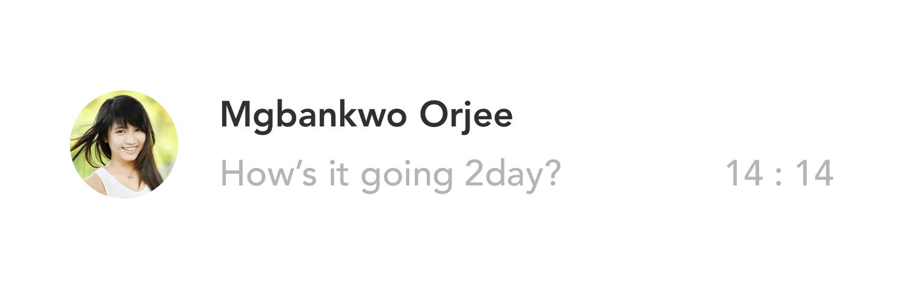Higher Cell
Less content and less anxiety on the homepage.
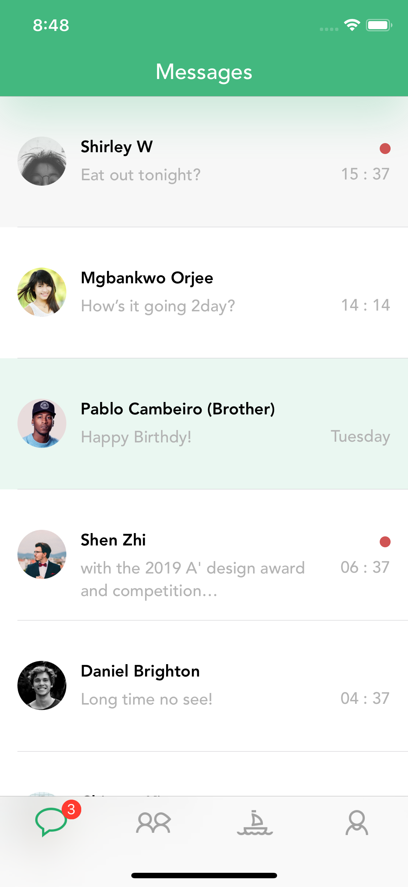Anonymous Like
Only the Original Promulgator can see who liked this post. Others can only see how many likes did this post receive.
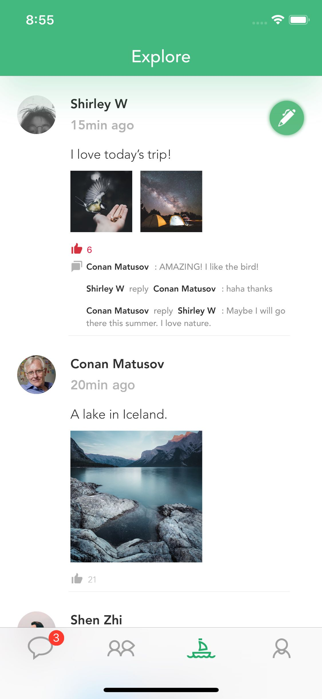Keyword Blocking
A customized block function.
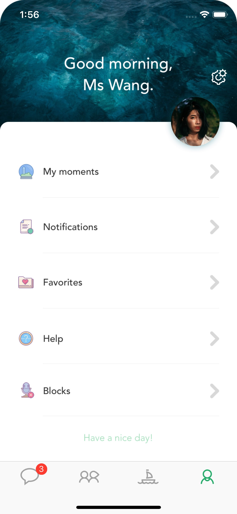 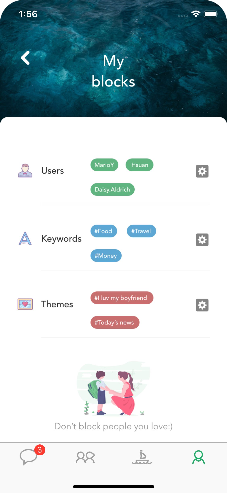A balance between public and private
Users can choose a mode(public/private) by pushing the red(public)/green(private) button on the right side when updating their posts. Posts in private mode can only be seen by friends, while public mode allows users to spread their stories to a wide range of people.
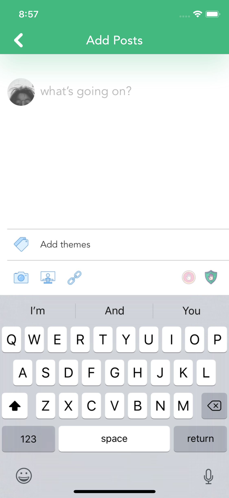Programming
I made a prototype of EZchat by Xcode and Swift.
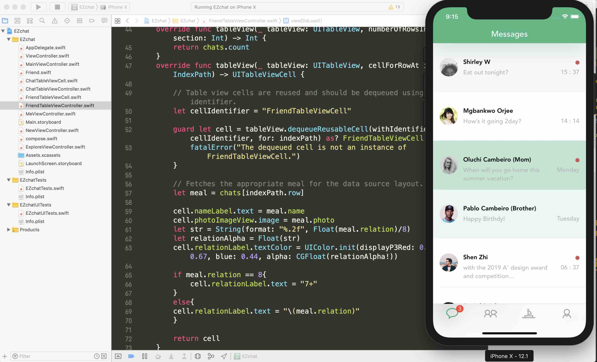What did I learn from programming?
Default settings are often better and time-saving. If do not know how to design, then just use default settings!